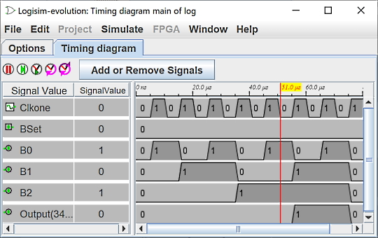

选择选项卡
“选择”选项卡允许您选择应包含在日志中的值。 下面的窗口对应于以下电路。

该选项卡分为三个垂直区域。 第一个（最左边）是电路中可以记录其值的所有组件的列表。 在内置库中，以下类型的组件支持日志记录。
接线库：引脚、探头和时钟组件对于具有与其关联的标签的组件，它们的名称对应于标签； 其他组件的名称指定了它们的类型及其在电路中的位置。
I/O 库：按钮和 LED 组件
内存库：除 ROM 之外的所有组件
任何子电路也会出现在列表中； 无法选择它们进行日志记录，但可以选择其中符合条件的组件。 请注意，RAM 组件要求您选择应记录哪个内存地址； 它只允许记录前 256 个地址。
最后一个（最右边）垂直区域列出了已选择的组件。 此外，它还指示将记录组件的多位值的基数（基数）； 基数对一位值没有显着影响。
sysclk 时钟必须出现在那里，它不会显示在图表中。
中间一列按钮允许操作所选内容中的项目。
- 添加>> 将左侧当前选定的项目添加到选择中。 它仅对符合条件的组件有效。
- 更改基数 在 2（二进制）、10（十进制）和 16（十六进制）之间循环选择当前选定组件的基数。
- 上移 将当前选择的组件向前移动一位。
- 下移 将当前选择的组件向后移动一位。
- << Remove 删除选择中当前选定的组件。
下面的第四部分允许您定义是否要在图表上方显示时间。 为此，需要选中 “时间参考” 框并选择将作为参考的信号。 频率将定义显示的时间尺度。 这并没有解决电路仿真的执行速度问题。 例如，下面我们选择了信号 B0 和频率 100hz。

下一步： 时间表窗口 。